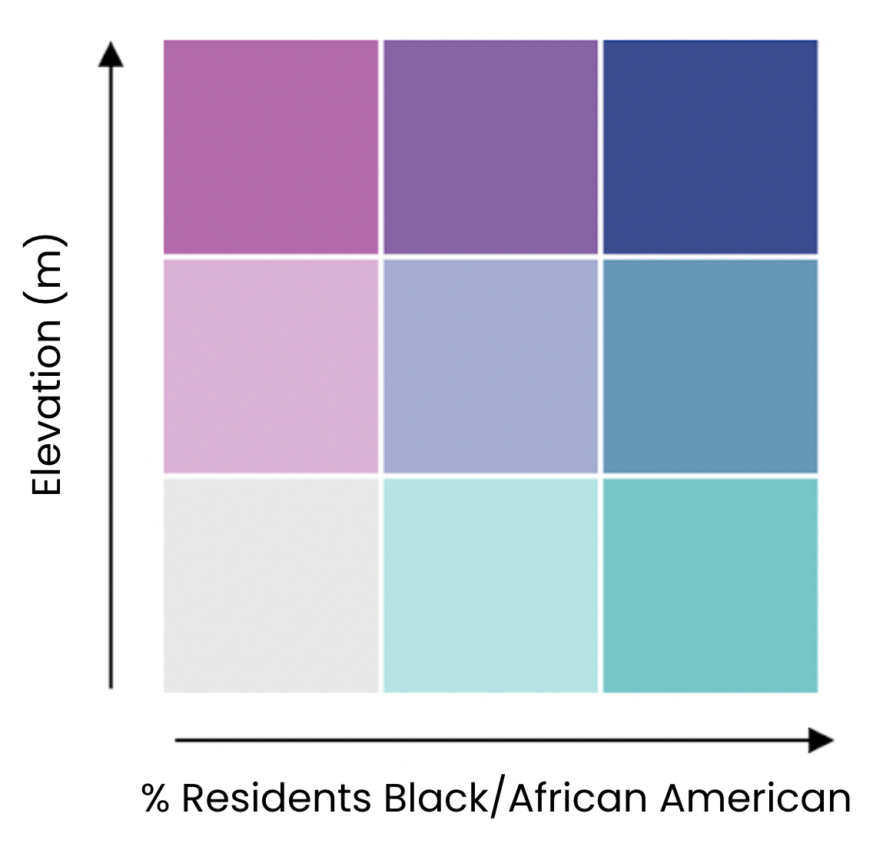

<!DOCTYPE html>
<html>
  <head>
    <meta charset="utf-8">
    <title>Bivariate Choropleth</title>
    <meta name="viewport" content="initial-scale=1,maximum-scale=1,user-scalable=no">
    <link rel="stylesheet" href="https://unpkg.com/leaflet@1.7.1/dist/leaflet.css"
   integrity="sha512-xodZBNTC5n17Xt2atTPuE1HxjVMSvLVW9ocqUKLsCC5CXdbqCmblAshOMAS6/keqq/sMZMZ19scR4PsZChSR7A=="
   crossorigin=""/>
   <!-- Make sure you put this AFTER Leaflet's CSS -->
   <script src="https://unpkg.com/leaflet@1.7.1/dist/leaflet.js"
  integrity="sha512-XQoYMqMTK8LvdxXYG3nZ448hOEQiglfqkJs1NOQV44cWnUrBc8PkAOcXy20w0vlaXaVUearIOBhiXZ5V3ynxwA=="
  crossorigin=""></script>
  <link rel="preconnect" href="https://fonts.gstatic.com">
  <link href="https://fonts.googleapis.com/css2?family=Poppins&display=swap" rel="stylesheet">
  <!--   <link href="https://api.mapbox.com/mapbox-gl-js/v2.3.0/mapbox-gl.css" rel="stylesheet">-->
    <style>
      body { margin: 0; padding: 0; }
      #map { position: absolute; top: 0; bottom: 0; width: 100%; }
    </style>
    <script src="/js/leaflet-0.7.2/leaflet.ajax.min.js"></script>
    <script src="KimS_matrix.js"></script>
    <style>
      .info {
          height: 250px;
          width: 284px;
          padding: 6px 8px;
          font: 14px/16px 'Poppins', Helvetica, sans-serif;
          /*font-family: 'Poppins', sans-serif;*/
          background: white;
          background: rgba(255,255,255,0.8);
          box-shadow: 0 0 15px rgba(0,0,0,0.2);
          border-radius: 3px;
      }
      .info h2 {
          margin: 0 0 5px;
          color: #000000;
      }

      .img {
          color: #555;
          background: white;
          background: rgba(255,255,255);
          box-shadow: 0 0 15px rgba(0,0,0,0.2);
          border-radius: 3px;
      }
    </style>
  </head>
  <body>
    <div id="map"></div>
    <script>

    var mapboxAccessToken = 'pk.eyJ1Ijoia2F0ZW1hcCIsImEiOiJja3A0NWV0ZTkwNjBtMm5vdWxzcXR6dWxjIn0.7rYO_pPmtvwuWUb0cG3QXQ';
    var map = L.map('map').setView([36.903853, -76.243643], 12);

    L.tileLayer('https://api.mapbox.com/styles/v1/{id}/tiles/{z}/{x}/{y}?access_token=' + mapboxAccessToken, {
        id: 'mapbox/light-v9',
        attribution: 'Map data &copy; <a href="https://www.openstreetmap.org/copyright">OpenStreetMap</a> contributors, Imagery © <a href="https://www.mapbox.com/">Mapbox</a>',
        tileSize: 512,
        zoomOffset: -1
    }).addTo(map);

    //L.geoJson(norfolkBGs).addTo(map);

      function getColor(axisA, axisB) {

        var a1 = '#E8E8E8';
        var b1 = '#ACE4E4';
        var c1 = '#5AC8C8';
        var a2 = '#DFB0D6';
        var b2 = '#A5ADD3';
        var c2 = '#5698B9';
        var a3 = '#BE64AC';
        var b3 = '#8C62AA';
        var c3 = '#3B4994';

        var a = getRange(axisA);
        var b = getRange(axisB);

        if (a == 1) { //low axisA value
          if (b == 1) return a1; //low axisB value
          else if (b == 2) return b1; //mid axisB value
          else return c1; //high axisB value
        }

        else if (a == 2) { //mid axisA value
          if (b == 1) return a2; //low axisB value
          else if (b == 2) return b2; //mid axisB value
          else return c2; //high axisB value
        }

        else if (a == 3) { //high axisA value
          if (b == 1) return a3; //low axisB value
          else if (b == 2) return b3; //mid axisB value
          else return c3; //high axisB value
        }

      }

      function getRange(x) {
        return x >= 66.66  ? 3 : //high
               x >= 33.33  ? 2 : //mid
                        1; //low
      }

      function style(feature) {
        return {
            fillColor: getColor(feature.properties.Elev_m_PCTL, feature.properties.PercentResidentsBlackAA),
            weight: 0.5,
            opacity: 1,
            color: 'white',
            dashArray: '0',
            smoothFactor: 1,
            fillOpacity: 0.7
        };
      }

      //L.geoJson(norfolkBGs, {style: style}).addTo(map);

      function highlightFeature(e) {
          var layer = e.target;

          layer.setStyle({
              weight: 3,
              //color: getOutlineColor(feature.properties.demographicIndex),
              fillOpacity: 0.01
          });

          if (!L.Browser.ie && !L.Browser.opera && !L.Browser.edge) {
              layer.bringToFront();
          }

          info.update(layer.feature.properties);
      }

      function resetHighlight(e) {
          geojson.resetStyle(e.target);
          //info.update();
      }

      var geojson;
      geojson = L.geoJson(norfolkBGs);

      function zoomToFeature(e) {
          map.fitBounds(e.target.getBounds(), {top: 50000, bottom: 50000, left: 50000, right: 50000});
      }

      function onEachFeature(feature, layer) {
          layer.on({
              mouseover: highlightFeature,
              mouseout: resetHighlight,
              click: zoomToFeature
          });
      }

      geojson = L.geoJson(norfolkBGs, {
          style: style,
          onEachFeature: onEachFeature
      }).addTo(map);

      var info = L.control();

      info.onAdd = function (map) {
          this._div = L.DomUtil.create('div', 'info'); // create a div with a class "info"
          this.update();
          return this._div;
      };

      // method that we will use to update the control based on feature properties passed
      info.update = function (props) {
          this._div.innerHTML = '<h2>Norfolk Elevation & Residency</h2>' +  (props ? '<h3>Topographic</h3><p>Elevation: ' + props.Elev_m + ' m (%ile:  ' + props.Elev_m_PCTL + ')</p><p>Elevation Rate of Change: ' + props.ElevROC + ' (%ile: ' + props.ElevROC_PCTL + ')</p>'
             //+ '<h3>Residential</h3><p>Black/African American Residents: ' + props.BlackAAResidents + ' (' + props.PercentResidentsBlackAA + '%)</p><p>Black Home Owners: ' + props.BlackHomeOwners + '</p><p>Black Renters: ' + props.BlackRenters + '</p><p>Black Tenures Total: ' + props.BlackTenuresTotal + '</p>'
             //+ '<h3>Economic</h3><p>Population Below Poverty Line: ' + props.PopBelowPovLine + ' (' + props.PercentBelowPovLine + '%)</p><p>Median Household Income: $' + props.MedianHHIncome + '
             //+ holcStr +
             //'<h3>Block Group Information</h3><p>Census Tract Number: ' + props.TractNum + '</p><p>Block Group Number: ' + props.BGNum
          : 'Hover over an area');
      };

      info.addTo(map);

      var img = L.control({position: 'bottomright'});

      img.onAdd = function (map) {

        var div = L.DomUtil.create('div', 'img');

        div.innerHTML += '';

        return div;
      }//"#f3f3f3 url('img_tree.png') no-repeat right top";

      img.addTo(map);

    </script>

  </body>
</html>
